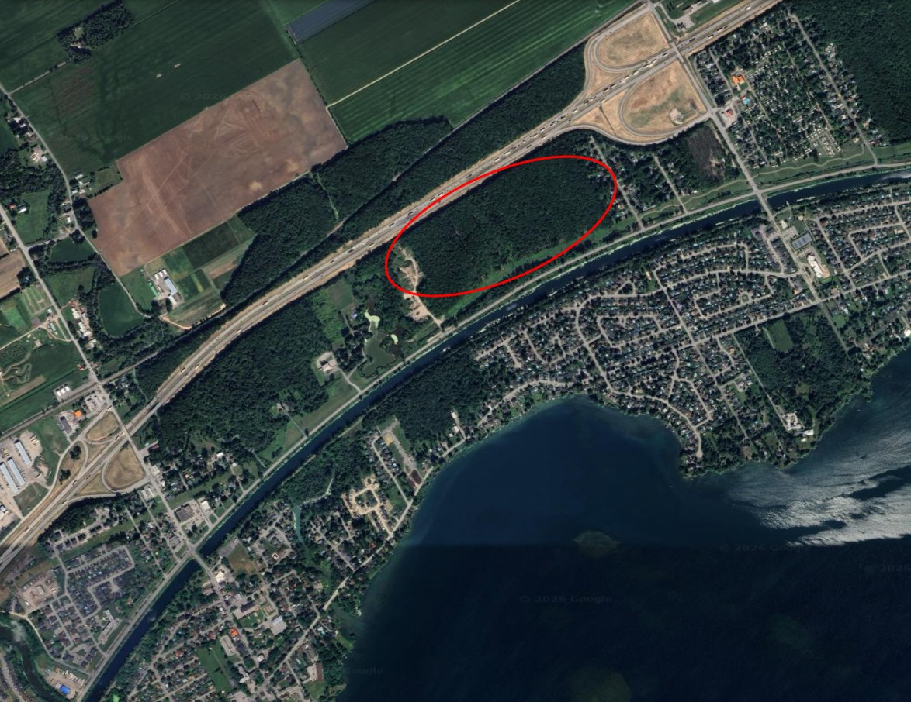

Mars 2026
Zonage Route 338 – Conserver la forêt ou développer des logements?

Avant mon mandat, j'ai critiqué le conseil pour son inaction sur le projet du camping KOA et sur les terrains le long de la route 338. L'attente de voir ce qui allait se passer a mené à une situation où on n'avait plus le choix que d'avancer. Au KOA, il est aujourd'hui trop tard pour faire marche arrière. Pour la 338, il est encore temps d'agir.
Cette forêt mérite qu'on s'y attarde. Elle contient des milieux humides, agit comme barrière de son pour l'autoroute qui la voisine, et c'est un des derniers endroits sur notre territoire où on a de la forêt vierge. Le couvert forestier à Coteau-du-Lac est déjà relativement faible : environ 16,2 % du territoire selon les données du ministère des Ressources naturelles et des Forêts du Québec. Chaque hectare compte.
Depuis que je suis élu, j'ai demandé à plusieurs reprises qu'on se penche sur le zonage des terrains qui longent la 338 : est-ce qu'on conserve cette forêt ou on ouvre la porte au développement? C'est la responsabilité du conseil de faire cette planification, et son droit de modifier le zonage. J'ai parlé à un avocat qui m'a confirmé que les villes sont protégées de façon béton par la législation et la jurisprudence contre les recours intentés pour renverser de telles décisions, tant qu'aucune demande de permis de construction n'a été déposée.
Le 10 mars dernier, j'ai donc déposé un avis de motion. Pour ceux qui ne connaissent pas la procédure : un avis de motion, c'est lorsqu'un conseiller annonce son intention de présenter une proposition à une séance ultérieure. Ça donne au conseil et aux citoyens le temps d'en prendre connaissance avant qu'on vote. Dans mon cas, je propose qu'un projet d'amendement au règlement de zonage soit présenté : reclassifier les zones RO-2, RO-3, RO-4, RO-5 et RO-7 en zones de conservation. Ça permettra donc au conseil de prendre le temps d'examiner la situation et de consulter les citoyens avant de voter sur la résolution.
Malheureusement, la mairesse essaie de bloquer le changement de zonage en qualifiant mon avis de motion d'illégal. C'est entièrement faux. Ça mine ma confiance à son égard : après autant d'années d'expérience, elle devrait connaître les règles du jeu d'un conseil municipal. Néanmoins, je vais continuer à me battre pour que la démocratie fonctionne et que les conseillers, et par extension les citoyens, puissent se prononcer sur le sujet avant qu'il ne soit trop tard.
J'appelle les citoyens intéressés à nous faire part de votre opinion : est-ce qu'on conserve ou on développe cette forêt? Formulaire.